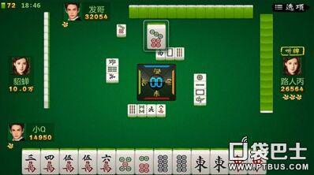

在和牌中，有二、七、八、一序数牌各一刻，红中当将牌。
起手配牌，只要有这几种序数牌和红中的对子，成和此番种的可能性越大。
在麻战中，作为搭子的引牌，即搭子或搭子相隔一张之牌，最好不要先打，听牌后舍出可以诱引所需之牌。

1、引诱挨张
搭子已够的情况下，你有六七饼时，先不要打四饼和九饼;有三四条时，暂时不要打一条和六条。等听牌之后，再打四饼或九饼，让其他家吃、碰.引诱五八饼挨张。或打一六条，让其他家吃、碰，进而诱和二五条挨张，都是行之有效的方法。
2、引诱嵌张
在搭子己够的情况下，手持二二四条，舍出二条，听嵌三条。若下家有一三三条，吃二条，打出三条，正好和牌。如对家或上家有二二三条，二条被碰后，三条当作无用之牌舍出，正急你所需。这里的“二条”也起到“引牌”的作用。
3、后舍挨张
搭有四五后打七”，这句熟语概括了引牌的作用。当手牌已经组合好三组顺子(或刻子)与一对将牌，剩四五七万(七万当引牌一直没舍出)，此时舍出七万显然有利。假如下家有六六八万，吃进七万打六万，正急你所需;如对家或上家有六七七万，碰七万打六万，你也可以和牌。